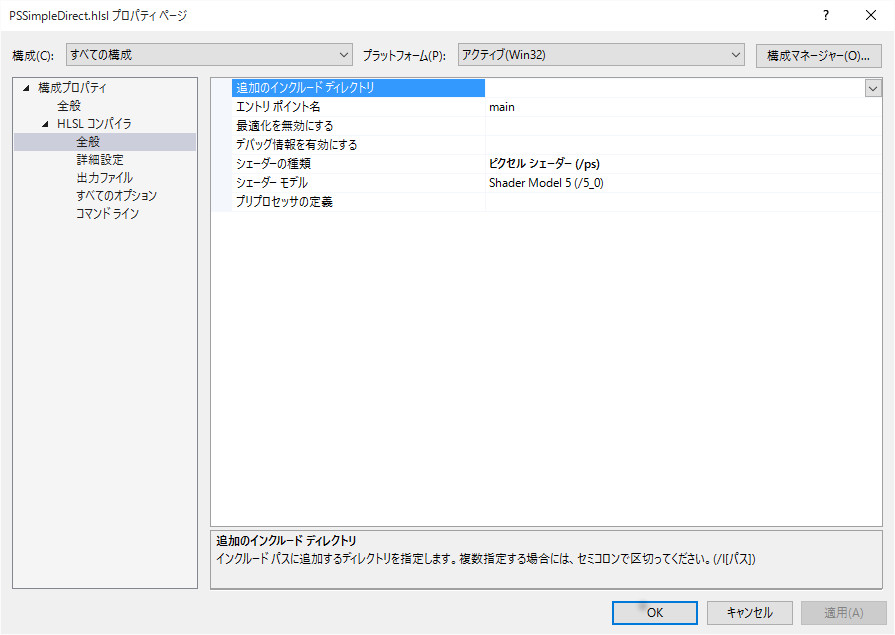
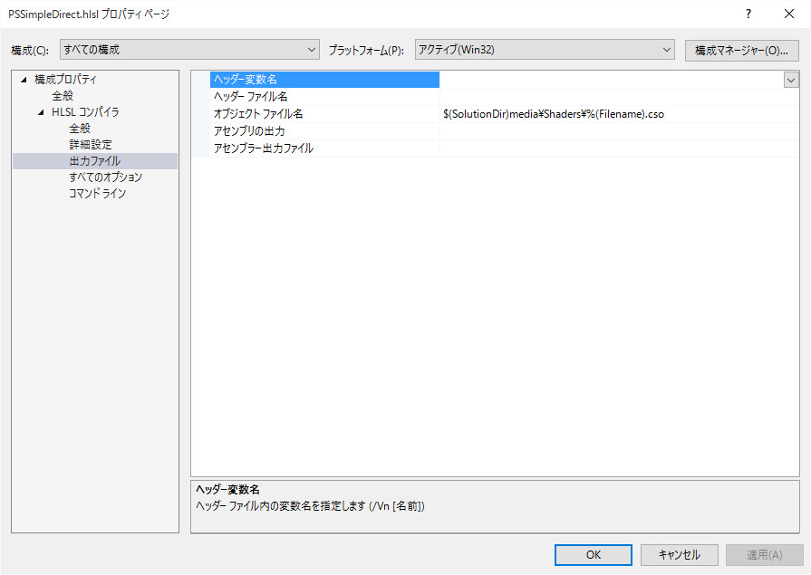

シンプルDxBase2015
Simple01．線を描画する
デバイス座標に直接描画する
このサンプルは、サンプル401に紹介した、デバイス座標への直接描画のシェーダを使用した例です。このサンプルでは、行列変換は全く行わずに、頂点の変更で動きを表現します。
サンプルのDxBase2015Simple/Simple01のソリューションを開いて、リビルド、実行しますと以下の画面が現れます。

図Simple01a
ここでは複数の線が、スクリーンセーバーのように動きます。
コード解説
シンプルDxBase2015にはシーンという考え方はありません。いきなりステージになります。またこれまでのGameObjectも存在しません。GameObjectに代わるものとして、サンプルではObjectとSimpleInterfaceの派生クラスとしてb>GameObjectクラスを作成しています。
別にこれは、決まりではありません、ステージは、StageBaseの派生クラスとして作成しますが、この派生クラスは、フレームワークからPreCreate()、Create()、Update()、Draw()の4つの仮想関数が呼び出されます。ですので、それに呼応するようにコードを記述すればいいのです。各オブジェクトを配列化などは、サンプルではしてますが、必須ではありません。
サンプルでの主なコードはGameObjects.h、cppに記述します。
以下は、GameObjects.hのGameStageクラスです。
//--------------------------------------------------------------------------------------
// class GameStage : public StageBase;
// 用途: ゲームステージ
//--------------------------------------------------------------------------------------
class GameStage : public StageBase{
vector<shared_ptr<GameObject>> m_GameObjectVec;
shared_ptr<View> m_View;
shared_ptr<DefaultRenderTarget> m_DefaultRenderTarget; //デフォルトのレンダリングターゲット
//文字列
shared_ptr<StringSprite> m_StringSprite;
public:
GameStage(){}
virtual ~GameStage(){}
virtual void Create()override;
virtual void Update()override;
virtual void Draw()override;
};
vector<shared_ptr<GameObject>> m_GameObjectVec;
コードが前後しますが、以下がGameObjectクラスです。
//--------------------------------------------------------------------------------------
// class GameObject : public Object, public SimpleInterface;
// 用途: ゲームステージ
//--------------------------------------------------------------------------------------
class GameObject : public Object, public SimpleInterface{
//頂点バッファ
ComPtr<ID3D11Buffer> m_VertexBuffer;
//頂点の数
UINT m_NumVertices;
//メッシュの作成
void CreateCustomMesh();
//頂点の変更
void UpdateCustomMesh();
//経過時間
float m_TotalTime;
public:
GameObject() :
m_TotalTime(0)
{}
virtual ~GameObject(){}
virtual void Create()override;
virtual void Update()override;
virtual void Draw()override;
};
class GameObject : public Object, public SimpleInterface{
//中略
};
PreCreate()、Create()はObjectクラスが持っている仮想関数です。Create()のみ純粋仮想関数になっています。ここではPreCreate()は多重定義しません。
シェーダークラス
シェーダーは、VSSimpleDirect.hlsl（頂点シェーダ）とPSSimpleDirect.hlsl（ピクセルシェーダ）を利用します。もともとDxBase2015のライブラリにあるシェーダです。これらのシェーダを、使いまわしできる形（つまりシングルトン）としてクラス化します。これらのクラス化については４０５．頂点を自作する２ドキュメントを参考にしてください。
各シェーダをVisualStdio2013のプロジェクトに登録する場合、注意点があります。
シェーダファイルのフィルタに右ボタンクリックで「追加」「既存の項目」で追加するわけですが、その際、以下のように各シェーダのプロパティ（HLSLコンパイラ）を設定します。

図Simple01b
この中で注意するのは全般にあるシェーダの種類、シェーダーモデル（上図）と出力ファイルのオブジェクトファイル名（下図）です。

図Simple01c
これらの設定を確認しましょう。特にシェーダの種類は各自設定する必要があります。シェーダーモデルと出力ファイルのオブジェクトファイル名は、プロジェクトに追加時に、自動設定されます。
cppファイル
シェーダとシェーダクラスを実装したら、cppファイルの記述をします。以下は、GameObject::reateCustomMesh()です。ここで、頂点を作成します。
//メッシュの作成
void GameObject::CreateCustomMesh(){
vector<VertexPosition> VirtexVec;
float Span = 2.0f / 100.0f;
for (size_t i = 0; i < 100; i++){
float f = -2.0f + cos(0.0f) + (float)i * Span;
float f2 = -2.0f + sin(0.0f) + (float)i * Span;
VirtexVec.push_back(Vector3(f, -f2, 0.0f));
VirtexVec.push_back(Vector3(f2, f, 0.0f));
}
//頂点バッファの作成（頂点を変更できる）
VertexUtil::CreateDynamicVertexBuffer(m_VertexBuffer, VirtexVec);
//頂点数の設定
m_NumVertices = static_cast<UINT>(VirtexVec.size());
}
//頂点バッファの作成（頂点を変更できる）
VertexUtil::CreateDynamicVertexBuffer(m_VertexBuffer, VirtexVec);
頂点の変更はGameObject::UpdateCustomMesh()で行います。ここでは、頂点バッファをマッピングして、トータル時間に合わせ、sinもしくはcosで変化させます。
最後にDraw()です。以下がCraw()の実体です。
void GameObject::Draw(){
auto Dev = App::GetApp()->GetDeviceResources();
auto pD3D11DeviceContext = Dev->GetD3DDeviceContext();
//ステータスのポインタ
auto RenderStatePtr = Dev->GetRenderState();
//コンスタントバッファの準備
SimpleDirectConstantBuffer sb;
//線の色は黄色
sb.m_DiffuseColor = Color4(1.0f, 1.0f, 0, 1.0f);
//コンスタントバッファの更新
pD3D11DeviceContext->UpdateSubresource(
CBSimpleDirect::GetPtr()->GetBuffer(), 0, nullptr, &sb, 0, 0);
//描画方法（線）
pD3D11DeviceContext->IASetPrimitiveTopology(D3D11_PRIMITIVE_TOPOLOGY_LINELIST);
//デプスステンシルは使用しない
pD3D11DeviceContext->OMSetDepthStencilState(RenderStatePtr->GetDepthNone(), 0);
//コンスタントバッファの設定(ピクセルシェーダのみでよい)
ID3D11Buffer* pConstantBuffer = CBSimpleDirect::GetPtr()->GetBuffer();
pD3D11DeviceContext->PSSetConstantBuffers(0, 1, &pConstantBuffer);
//シェーダの設定
pD3D11DeviceContext->VSSetShader(VSSimpleDirect::GetPtr()->GetShader(), nullptr, 0);
pD3D11DeviceContext->PSSetShader(PSSimpleDirect::GetPtr()->GetShader(), nullptr, 0);
//インプットレイアウトの設定
pD3D11DeviceContext->IASetInputLayout(VSSimpleDirect::GetPtr()->GetInputLayout());
//描画
//ストライドとオフセット
UINT stride = sizeof(VertexPosition);
UINT offset = 0;
pD3D11DeviceContext->IASetVertexBuffers(
0, 1, m_VertexBuffer.GetAddressOf(), &stride, &offset);
pD3D11DeviceContext->Draw(m_NumVertices, 0);
//後始末
Dev->InitializeStates(RenderStatePtr);
}
このように、シンプルDxBase2015はほとんど自動処理はされませんが、一つ一つオブジェクト指向に乗っ取って記述することで、自由度の高いコードを記述すことが可能となっています。
ここでは頂点は単純ですが、プリミティブの頂点の作成、テクスチャの設定などは順次紹介します。
シンプルDxBase2015には、モデルのロード（FBXなど）は用意されてないので、自作することになります。その簡単な方法についても順次説明します